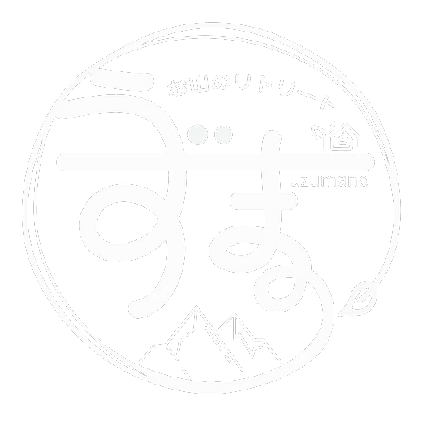
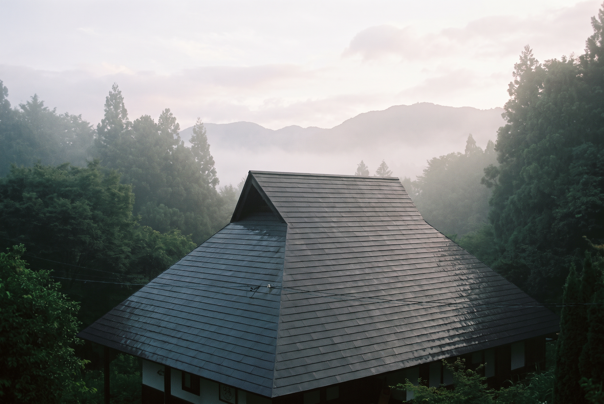
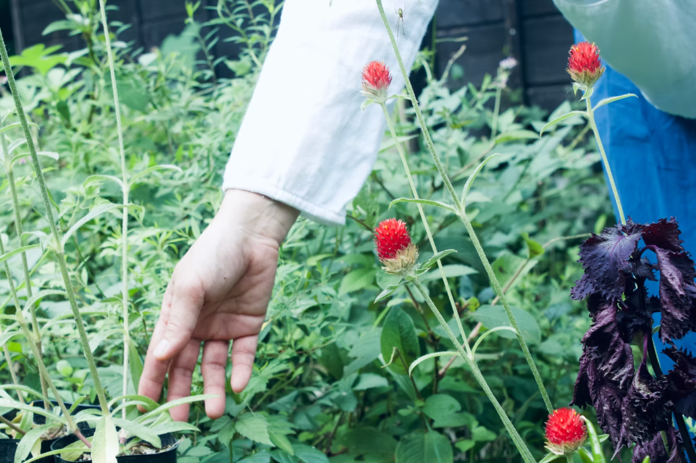
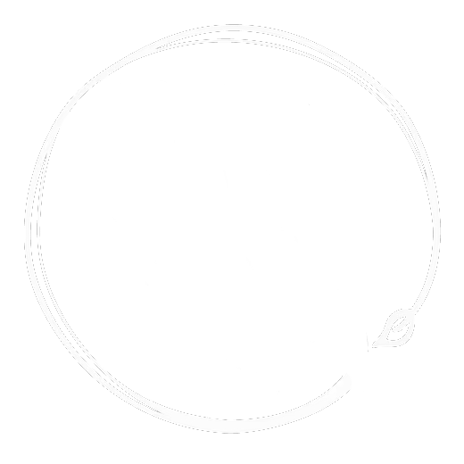
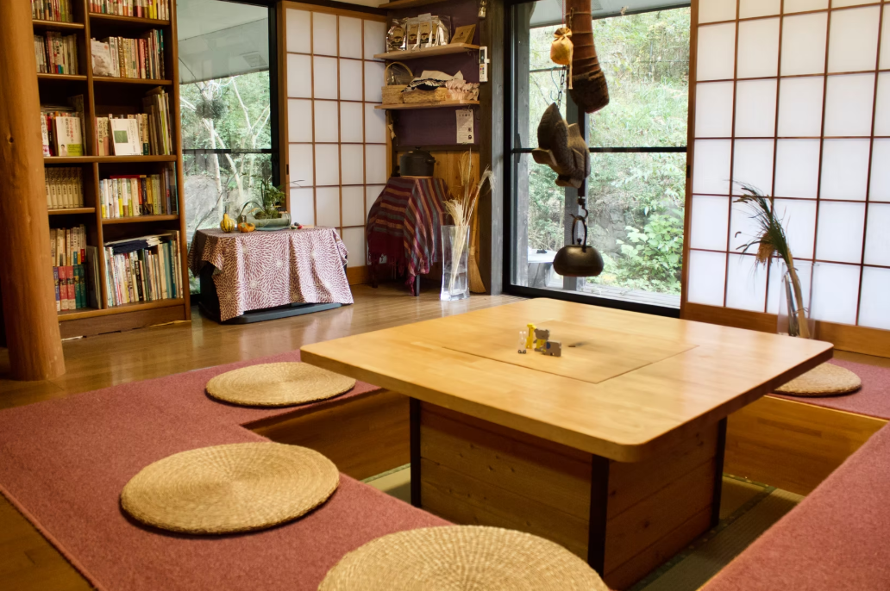
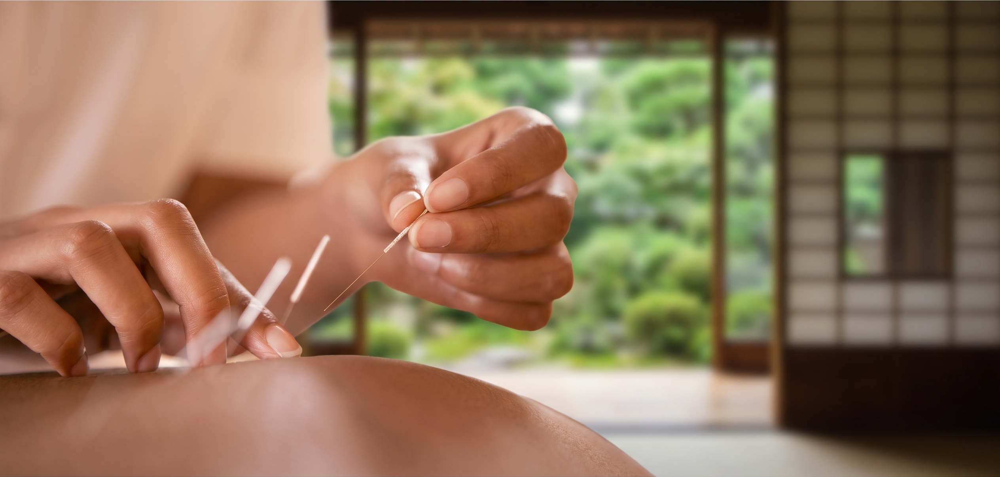

うずまの お山のリトリート
都心から約90分、山梨県道志村。
酵素玄米のおにぎりや手づくりの酵素ドリンクをいただきながら、胃腸を休める「半断食」のリトリートです。
ヨガ、瞑想、山歩きとともに、二泊三日から。


修行のような節制ではなく、楽しく続けられる食とからだの整え方をお伝えするための場所です。看護師・助産師・鍼灸師・医学気功整体師である代表 手島 紫がひとりでお迎えします。
二十代で怪我と離婚を経験し、自分の体調を崩したことをきっかけに、心とからだと食事の関係を学び直してきました。
基本的に女性専用。お子様連れのご家族、ご夫婦・カップルでのご利用も可能です。
代表と施設について→


空腹を感じにくい半断食を、
一日を通して、退屈せずに。
朝は人参とりんごのジュース、昼は酵素玄米のおにぎり、夕は温野菜と豆類。少量でも食べながら胃腸を休めるので、「意外とお腹いっぱいだった」という声が多く届きます。朝夕はヨガと気功、つぼ押しと瞑想。日中は道志村や山中湖を歩きます。帰ってからも続けられるよう、回復食のアドバイスや重ね煮レッスン、自分で押せるつぼをお渡しします。

いずれも一泊あたり二食付き、ヨガ・瞑想を含みます。二泊三日から承ります。
ファスティングリトリート
体に不調を感じている方、一度胃腸をリセットしたい方へ。半断食と酵素ドリンク断食の二種類があります。
養生リトリート
疾患や食事制限のある方、断食には抵抗がある方へ。有機野菜の食事を自分で作り、いただく体験型のプログラムです。
ママ＆ベビーリトリート
産後に最適な食事とからだのケアを学ぶプログラム。授乳・育児相談、ベビー沐浴、入浴時の保育などもご用意しています。
ご宿泊について
二泊三日から（初めての方は二泊から）。三泊以上は二名様から。効果的にデトックスされたい方には三泊以上をおすすめします。
割引
連泊割：三泊目以降は1,000円引き。リピーター割：一年以内のご利用で、二回目以降の宿泊につき1,000円引き（二泊以上）。
主なオプション
トレッキング 大人1,000円〜／子ども600円〜。忍者トレッキング 大人2,500円／子ども1,500円。鍼灸・整体・よもぎ蒸しは別途。

マノマタニティ鍼灸院 妊活・マタニティ・産後のための鍼灸院です。うずまのと同じ手島 紫が施術しています。 鍼灸院のサイトへ→朝
昼
夜
肉・魚・卵は使いません。野菜と昆布のお出汁に、自然農法や有機栽培の野菜とプラントベースのたんぱく質を合わせます。
発酵玄米
無農薬の玄米に、小豆や黒豆、数種類の雑穀を加え、一日以上しっかり浸水させて炊き上げます。三〜四日寝かせた発酵玄米は、もちもちと味わい深く。
手づくり酵素
市販の酵素は熱処理されているため、生きたまま届けるのが難しいもの。厳選した旬の無農薬の野菜・果物・穀物を、できるだけ多くの種類で。
{{ slideTitle }}
{{ slideBody }}

うずまのは一般的な旅館ではなく、心身を整えたいという方のための小さな施設です。ふだんは私ひとりで切り盛りしているため、旅館のようなサービスはご用意できません。
食事の準備やお片づけは、みなさんと一緒にお願いしています。部屋に何かを運ぶことも、好きな時間に食事を出すこともできません。
そのかわり、台所に立ちながら話したり、山を歩きながら相談を受けたりする時間がたくさんあります。そういう場所だとご理解のうえ、お越しいただけたら嬉しいです。
北丹沢と道志山脈の谷あい、清流・道志川が流れる細長い村です。徒歩5分のところに源泉かけ流しの温泉があります。
電車
新宿駅 ↔ JR中央本線 藤野駅。駅から車で約45分。藤野駅まで無料で送迎いたします（要予約）。
高速バス
バスタ新宿 ↔ 山中湖旭丘（バス停より車で約30分）、または中央道都留（約40分）。各バス停まで送迎いたします（要予約）。
お車
中央自動車道 相模湖ICまたは相模原ICより約40〜50分。国道413号「紅椿の湯入口」の看板を左折。駐車場3台。
日程やお体の状態をうかがったうえで、無理のない過ごし方をご提案します。生理中のご利用や持病のある方も、ご遠慮なくお知らせください。お電話でもメールでも、私が直接お返事します。